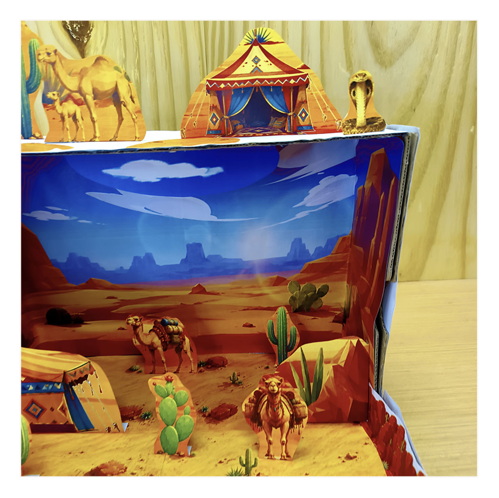

Desert Habitat Diorama for Kids
Build a colorful 3D desert scene with camels, cacti, rocky scenery and a desert tent. Students print, cut and arrange the pieces to create their own desert habitat diorama.
A hands-on school project for exploring desert habitats, landscapes, plants and animals.

Create a 3D Desert Habitat
Printable backgrounds and freestanding pieces turn the project into a layered desert landscape. Students can arrange the camels, cacti, rocks and other elements to make the scene their own.
Freestanding camel figures and smaller desert animal pieces add life to the habitat.
Different cactus shapes and small plants help create the dry desert environment.
Sandy ground, distant rock formations and a blue-sky backdrop create depth.
A visual project for learning about habitats, desert environments and adaptation.
Printable Desert Diorama Pages
The PDF includes backgrounds, sandy ground sections, cacti, rocks and other cut-out elements.

Camels, Cacti & Desert Scenery


Explore the Finished Desert Model


Print, Cut, Build & Learn
Print the project pages.
Cut out the scenery.
Assemble the 3D habitat.
Explore desert habitats.
Printable Desert Habitat Diorama
The secure digital download will appear here after we connect the checkout.